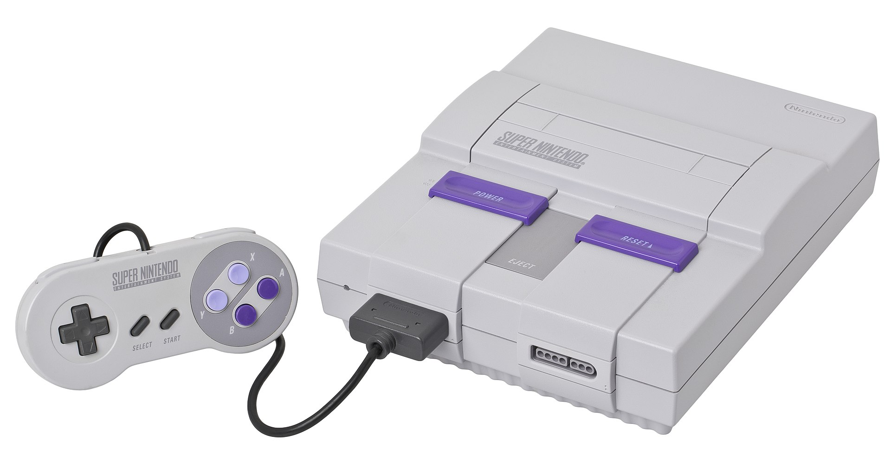
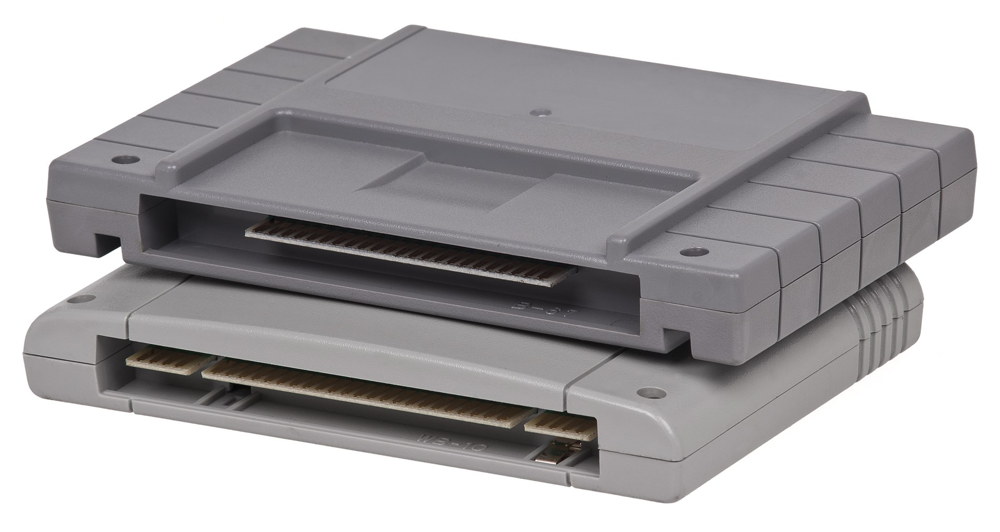

O Super Nintendo Entertainment System (ou apenas Super Nintendo, abreviado SNES; no Japão Super Famicom, abreviado SFC, em japonês: スーパーファミコン, transl. Sūpā Famikon) é um console de videogame de 16-bits de quarta geração desenvolvido pela Nintendo, que foi lançado no período de 1990 à 1993 em várias parte do mundo. No Japão foi adotando o nome abreviado do seu antecessor, o Famicom (de Nintendo Family Computer) sendo chamado Super Famicom. Na Coreia do Sul, é conhecido como Super Comboy e foi distribuído pela Hyundai Electronics. Embora cada versão seja essencialmente as mesmas, várias formas de bloqueio regional impedem que as diferentes versões sejam compatíveis entre si.
No total foram lançados 1.757 jogos oficialmente para o console, sendo 721 na América do Norte, 517 na Europa e 1.448 no Japão, 231 jogos foram lançados no formato digital para o Satellaview.[23] Muitos jogos de SNES como Super Mario World, The Legend of Zelda: A Link to the Past, Donkey Kong Country, EarthBound, Super Metroid, Yoshi's Island e vários outros são frequentemente citados como alguns dos melhores jogos de de todos os tempos; inúmeros jogos de SNES foram relançados várias vezes, incluindo no Virtual Console, Super NES Classic Edition e no serviço de jogos clássicos no Nintendo Switch Online. É possível jogar todos os jogos do Game Boy no SNES com o acessório Super Game Boy. Os jogos eram lançados em cartuchos chamados de Game Pak no ocidente e Cassette no Japão com o total de 128 Mbit de memória, o formato dos cartuchos é diferente nas versões da América do Norte para os do Japão/Europa.
